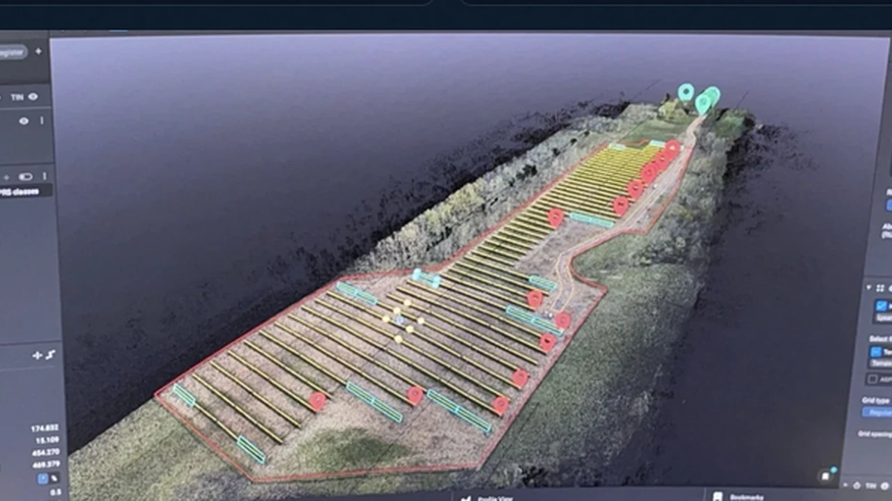

⌘
Networks & infrastructure
IP addressing, subnetting, connectivity diagnostics, hardware deployment, uptime monitoring, and performance optimization.
I'm Nyru J. Jackson — an IT professional, cybersecurity student, and hands-on problem solver with real-world experience supporting infrastructure, troubleshooting networks and systems, and implementing reliable technology solutions.
Here you'll find my professional experience and technical projects spanning networking, cybersecurity, database management, and infrastructure monitoring.
My experience crosses the full lifecycle of IT — from hardware and connectivity to architecture, access control, and technical documentation.
IP addressing, subnetting, connectivity diagnostics, hardware deployment, uptime monitoring, and performance optimization.
System hardening, identity and access management, least privilege, network segmentation, and audit-log analysis.
Relational database concepts, Microsoft Access forms and reports, SQL querying, data models, and documentation.
Turning goals into technical requirements, testing work, documenting solutions, and understanding operational trade-offs. Project management and business operations provide context for planning, documentation, and technical decision-making.
Hands-on labs, technical case studies, and independent builds spanning networking, cybersecurity, databases, and infrastructure.
Projects are labeled as coursework, team work, concepts, or personal builds. Screenshots are from supplied project materials, except the monitoring dashboard's illustrative graphic.
Real technical responsibilities, production environments, and hands-on operational troubleshooting.
Nestor Technologies · Buffalo, NY
Primary on-site technician supporting daily operations at a cryptocurrency mining facility with 800+ ASIC devices across 100+ client accounts. Troubleshoot IP addressing, subnetting, network connectivity, miner performance, and hardware faults. Monitor equipment health and help restore miners that do not return to service as expected after automated curtailment events.
Hands-on experience across physical networking, system monitoring, and troubleshooting in a production environment.
Ethernet cabling and termination, switch configurations, IP addressing, connectivity troubleshooting, and network-connected equipment deployment.
Monitoring equipment health, system performance, alerts, connectivity, and operational availability in a production environment.
Diagnosing hardware and connectivity faults, resolving equipment issues, and verifying systems return to normal operation.
The facility uses day-ahead electricity market information, curtailment, and demand-response programs to manage operating economics. I monitor the resulting equipment state and understand the business impact.
Terratek GPS Modeling · Tonawanda, NY
Supported survey and mapping projects that combined field stakeout, LiDAR and photogrammetry data capture, and office-based model preparation. My work included staking solar-field points in the field, collecting control and GPS observations for elevation correction, processing scan data, and turning site information into usable layouts, linework, and deliverables.
At Terratek, I worked across field stakeout, GNSS ground control, LiDAR and photogrammetry data capture, and preparation of mapping and terrain deliverables.

Images are examples of real project work. Original site coordinates and restricted project files are not provided on this website.
Brown Security Solutions · Hamburg, NY
Installed and configured access-control equipment including card readers and biometric scanners. Performed software updates, system diagnostics, and hardware testing.
ADT Security Systems · Cheektowaga, NY
Installed security and surveillance systems for residential and commercial customers, including CCTV, DVRs, NVRs, low-voltage wiring, and access-control components. Troubleshot video, signal, and network communication issues.
Academic foundations, technical training, and professional development.
Information Technology & Management (ITM) · Undergraduate degree
ITM undergraduate graduation expected Spring 2027. MIS graduate studies may begin Fall 2027.
IT Career Training Program · 2025–present
Associate of Science, Liberal Arts · 2015–2017
Interested in my experience, technical skills, or projects? I’d be glad to connect and discuss how I can contribute to your team.